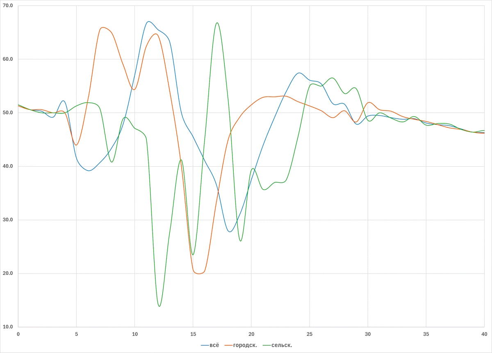

С.П. Обогуев
Надёжна ли таблица смертности Госкомстата СССР
для населения СССР 1938-1939 годов?
В 1989 году Госкомстат СССР опубликовал расчитанные им таблицы
смертности населения СССР для 1926-1927, 1938-1939, 1958-1959,
1969-1970 и позднейших годов ("Таблицы
смертности и ожидаемой продолжительности жизни населения", М.
: Государственный комитет СССР по статистике, 1989).
По воспоминанию Е.М. Андреева, издание было подготовлено Отделом
статистики населения, здравоохранения и социального обеспечения
Госкомстата СССР, который с конца 1960-х возглавляа Римма Михайловна
Дмитриева.
Дмитриева участвовала в расчете таблиц смертности
населения СССР и республик 1958-1959 гг. и защитила диссертацию по
близкой тематике:
Р.М. Дмитриева, "Основные тенденции смертности
населения СССР и демографическое прогнозирование",
Науч.-исслед. ин-т по проектированию вычислит. центров и систем
экон. информации (НИИ ЦСУ СССР), Москва, 1975
Незадолго до 1989 года были сняты цензурные ограничения на
публикацию многих демографических данных.
Таблицы хранились в архиве отдела, Дмитриева собрала их и с
одобрения руководства Госкомстата отпечатала небольшим тиражом.
Издание поступило в библиотеки и учёным демографам.
Все таблицы были рассчитаны задолго до их публикации в 1989 году.
Для 1926-27 гг. были предположительно взяты таблицы Новосельского
– Паевского (Экономико-статистический сектор Госплана СССР,
"Смертность и продолжительность жизни населения СССР 1926 - 1927.
Таблицы смертности", М.-Л. : Планхозгиз, 1930), хотя Новосельский
и Паевский расчитали таблицу не для всего СССР, а областные
таблицы для различных районов СССР, за исключением Средней Азии.
Гипотетически, эти областные таблицы могут быть сшиты (по удельным
весам областей для групп возраст-пол-тип местности по переписи
1926 года) в сводную таблицу покрывающую охватываемые ими
совокупно районы, т.е. СССР без Средней Азии.
Таблица для 1938-1939 года, предположительно, была расчитана по
следам переписи 1939 года по текущим данным о смертности.
Дмитриева с осторожностью относилась к значениям старых таблиц, в
автореферате диссертации она пишет об обращении к ним (стр. 8-9):
«В исследовании учитывается качество статистического материала,
положенного в основу построения рассматриваемых таблиц смертности.
Принимая во внимание различную степень качества исходных данных
таблиц смертности [...], исследование проводится с определенными
ограничениями: в отдельных случаях используется лишь параллельный
анализ соотношений показателей смертности мужчин и женщин,
городского и сельского населенния; иногда сопоставляются лишь
определенные группы возрастов, на которых меньше может отразиться
недоучёт умерших».
Опубликованные таблицы имеют высокую значимость для исторической
демографии, но в какой мере можно на них полагаться?
Мы провели проверку таблицы для 1938-1939 гг.
* * *
Первая часть проверки – это анализ внутренней самосогласованности
таблицы.
Таблица содержит три раздела: для городского населения, для
сельского населения и для всего населения (городского и сельского
населения совокупно). В каждом разделе заключены возрастные
коэффициенты смертности для каждого года возраста (0-100 лет),
отдельно для мужского пола, для женского пола и для обоих полов
суммарно. Коэфициенты q(x) показывают, какая доля данного вида
населения умрёт за год при переходе от возраста x к
возрасту x + 1.
Коэффициенты не являются независимыми, но связаны между собой. Если
обозначить
qxm, qxf, qxb –
возрастные коэффициенты смертности для мужчин, женщин и обеих
полов в возрасте x
pxm, pxf – доли мужчин и женщин в населении
возраста x
то имеется связь:
pxm + pxf = 1.0
qxm × pxm + qxf × pxf
= qxb
отражающая обстоятельство, что всё население складывается из мужчин
и женщин, а количество смертей в населении за год – из смертей
мужчин и смертей женщин за этот год. Из каковой системы уравнений
несложно выразить процент мужчин в населении данном возрасте
подразумеваемый коэффициентами смертности qx. Таблица, таким
образом, помимо значений приводимых коэффициентов смертности неявно
содержит также половые пропорции для каждого возраста,
использованные составителями таблицы.
Для таблицы смертности населения СССР 1938-1939 гг. половая
пропорция дешифруется следующим образом (см. ниже таблицу и график).
Легко видеть, что для некоторых возрастов подразумеваемая таблицей
доля мужчин в населении гуляет вольным образом и имеет
нереалистичные значения.
Некоторые из этих странных на первый взгляд значений (например 100%
мужчин для сельского населения в возрасте 16 лет) представляют
попросту артефакт погрешности округления при публикации: величины qx
для m, f, b близки и различаются лишь на единицу или несколько
единиц в самом последнем десятичном знаке. Мы сопроводили такие
значения пометками о возможном диапазоне погрешности возникающем
из-за низкого раствора между qxm и qxf в тех
случаях, когда размах такой погрешности превосходит 4%. Однако после
учёта возможной погрешности округления остаётся множество странных
значений, концентрирующихся в молодых возрастах:
возраст
(лет) |
% мужчин в населении |
год
рождения |
| совокупном |
городском |
сельском |
| 0 |
51.5 |
51.3 |
51.5 |
1938 |
| 1 |
50.6 |
50.6 |
50.6 |
1937 |
| 2 |
50.3 |
50.6 |
50.0 |
1936 |
| 3 |
49.2 |
50.0 |
50.0 |
1935 |
| 4 |
52.0 |
50.0 |
50.0 ± 8 |
1934 |
| 5 |
41.5 |
44.0 |
51.3 |
1933 |
| 6 |
39.2 |
52.7 |
51.9 |
1932 |
| 7 |
40.7 |
65.5 |
50.8 |
1931 |
| 8 |
43.4 |
65.0 |
40.8 |
1930 |
| 9 |
47.9 |
59.0 |
48.9 |
1929 |
| 10 |
57.1 |
54.4 |
47.1 |
1928 |
| 11 |
66.7 |
62.5 |
45.0 ± 5 |
1927 |
| 12 |
65.5 |
64.4 |
14.3 ± 14 |
1926 |
| 13 |
63.2 ± 5 |
54.0 |
66.7 ± 16 |
1925 |
| 14 |
50.0 ± 16 |
40.0 |
41.2 ± 5 |
1924 |
| 15 |
25.0 ± 25 |
20.7 |
23.5 ± 5 |
1923 |
| 16 |
40.0 ± 6 |
20.5 |
100.0 ± 100 |
1922 |
| 17 |
36.6 |
33.3 |
66.7 |
1921 |
| 18 |
28.0 |
44.9 |
52.6 ± 5 |
1920 |
| 19 |
31.0 |
49.2 |
26.3 ± 5 |
1919 |
| 20 |
37.5 |
51.5 |
39.3 |
1918 |
| 21 |
43.9 |
52.9 |
35.7 |
1917 |
| 22 |
49.2 |
53.0 |
37.0 |
1916 |
| 23 |
54.0 |
53.1 |
37.5 |
1915 |
| 24 |
57.4 |
52.1 |
45.5 |
1914 |
| 25 |
56.1 |
51.3 |
55.0 ± 5 |
1913 |
| 26 |
55.4 |
50.4 |
55.0 ± 5 |
1912 |
| 27 |
51.7 |
49.1 |
56.5 |
1911 |
| 28 |
51.6 |
50.4 |
53.6 |
1910 |
| 29 |
47.9 |
48.3 |
54.5 |
1909 |
| 30 |
49.4 |
51.9 |
48.6 |
1908 |
| 31 |
49.5 |
50.6 |
50.0 |
1907 |
| 32 |
49.1 |
50.3 |
49.0 |
1906 |
| 33 |
48.8 |
49.3 |
48.3 |
1905 |
| 34 |
48.9 |
48.8 |
49.3 |
1904 |
| 35 |
48.1 |
48.4 |
47.7 |
1903 |
| 36 |
47.8 |
47.8 |
48.0 |
1902 |
| 37 |
47.6 |
47.2 |
47.9 |
1901 |
| 38 |
47.0 |
46.9 |
46.9 |
1900 |
| 39 |
46.4 |
46.4 |
46.4 |
1899 |
| 40 |
46.3 |
46.2 |
46.7 |
1898 |
| 41 |
46.2 |
46.4 |
46.3 |
1897 |
| 42 |
46.2 |
46.5 |
45.9 |
1896 |
| 43 |
46.0 |
46.8 |
45.6 |
1895 |
| 44 |
46.1 |
46.9 |
45.6 |
1894 |
| 45 |
46.2 |
47.2 |
45.6 |
1893 |
| 46 |
46.1 |
47.3 |
45.3 |
1892 |
| 47 |
46.0 |
47.4 |
45.3 |
1891 |
| 48 |
46.0 |
47.4 |
45.1 |
1890 |
| 49 |
45.8 |
47.4 |
44.9 |
1889 |
| 50 |
45.5 |
47.2 |
44.5 |
1888 |
| 51 |
44.8 |
46.9 |
43.9 |
1887 |
| 52 |
44.1 |
46.5 |
42.9 |
1886 |
| 53 |
43.3 |
45.9 |
42.0 |
1885 |
| 54 |
42.6 |
45.4 |
41.2 |
1884 |
| 55 |
41.9 |
44.7 |
40.4 |
1883 |
| 56 |
41.2 |
44.0 |
39.8 |
1882 |
| 57 |
40.6 |
43.3 |
39.4 |
1881 |
| 58 |
40.0 |
42.4 |
38.9 |
1880 |
| 59 |
39.5 |
41.5 |
38.7 |
1879 |
| 60 |
39.3 |
40.8 |
38.8 |
1878 |
| 61 |
39.4 |
40.2 |
39.1 |
1877 |
| 62 |
39.7 |
39.6 |
39.7 |
1876 |
| 63 |
40.0 |
39.1 |
40.3 |
1875 |
| 64 |
40.2 |
38.6 |
40.9 |
1874 |
| 65 |
40.3 |
38.0 |
41.1 |
1873 |
| 66 |
40.1 |
37.3 |
41.0 |
1872 |
| 67 |
39.7 |
36.7 |
40.9 |
1871 |
| 68 |
39.3 |
35.9 |
40.5 |
1870 |
| 69 |
38.8 |
35.2 |
40.1 |
1869 |
| 70 |
38.4 |
34.4 |
39.8 |
1868 |
| 71 |
38.0 |
33.8 |
39.6 |
1867 |
| 72 |
37.7 |
33.1 |
39.4 |
1866 |
| 73 |
37.4 |
32.5 |
39.2 |
1865 |
| 74 |
37.1 |
31.8 |
39.0 |
1864 |
| 75 |
36.9 |
31.2 |
38.8 |
1863 |
| 76 |
36.6 |
30.7 |
38.6 |
1862 |
| 77 |
36.4 |
30.3 |
38.3 |
1861 |
| 78 |
36.0 |
29.9 |
38.0 |
1860 |
| 79 |
35.8 |
29.5 |
37.7 |
1859 |
| 80 |
35.4 |
29.0 |
37.3 |
1858 |
| 81 |
35.2 |
28.7 |
37.0 |
1857 |
| 82 |
34.9 |
28.5 |
36.6 |
1856 |
| 83 |
34.7 |
28.3 |
36.3 |
1855 |
| 84 |
34.5 |
28.2 |
36.0 |
1854 |
| 85 |
34.3 |
28.1 |
35.7 |
1853 |
| 86 |
34.1 |
28.1 |
35.4 |
1852 |
| 87 |
34.0 |
28.2 |
35.0 |
1851 |
| 88 |
33.8 |
28.3 |
34.6 |
1850 |
| 89 |
33.6 |
28.6 |
34.2 |
1849 |
| 90 |
33.5 |
28.9 |
33.8 |
1848 |
| 91 |
33.3 |
29.3 |
33.4 |
1847 |
| 92 |
33.2 |
29.9 |
32.9 |
1846 |
| 93 |
33.1 |
30.5 |
32.5 |
1845 |
| 94 |
33.1 |
31.2 |
32.1 |
1844 |
| 95 |
32.9 |
32.1 |
31.5 |
1843 |
| 96 |
32.9 |
35.2 |
31.0 |
1842 |
| 97 |
32.9 |
34.3 |
30.5 |
1841 |
| 98 |
33.0 |
35.7 |
29.9 |
1840 |
| 99 |
33.1 |
37.1 |
29.3 |
1839 |
| 100 |
33.2 |
38.9 |
28.7 |
1838 |
Распечатка модулем
rtss.validate_table_193x.AnalyzeTable
График доли мужчин в населении СССР подразумеваемой в таблице
смертности 1938-1939 гг.:
Тот же график доли мужчин в населении СССР по таблице смертности
1938-1939 гг., с увеличенным участком 0-40 лет:

Линии полового распределения не только осциллируют жестоким и
неправдоподобным образом.
Но впридачу, при корректной сшивке таблицы половая линия для
совокупного населения должна всюду пролегать между половыми линиями
городского и сельского населения, что не выполняется.
* * *
Подобным же образом из значений таблицы может быть восстановлена и
употреблённая при её составлении пропорция между сельским и
городским населением для каждого пола (и обоих полов совокупно) и
возраста.
Для ячеек обозначенных вопросительными знаками значение
невосстановимо, т.к. для городского и сельского населения в этих
половозрастных группах указана в точности одинаковая смертность, что
само по себе является сомнительным.
возраст
(лет) |
% горожан в
населении |
год
рождения |
оба
пола |
муж |
жен |
| 0 |
31.3 |
31.0 |
31.4 |
1938 |
| 1 |
32.4 |
32.4 |
32.4 |
1937 |
| 2 |
26.5 |
26.0 |
26.6 |
1936 |
| 3 |
25.4 |
25.1 |
25.1 |
1935 |
| 4 |
24.5 |
25.0 |
24.5 |
1934 |
| 5 |
23.8 |
22.3 |
22.1 |
1933 |
| 6 |
25.4 |
22.6 |
20.8 |
1932 |
| 7 |
31.5 |
29.0 |
20.8 |
1931 |
| 8 |
38.6 |
48.9 |
21.8 |
1930 |
| 9 |
39.7 |
53.7 |
24.5 |
1929 |
| 10 |
34.1 |
77.8 ± 5 |
29.7 |
1928 |
| 11 |
28.0 |
66.7 ± 11 |
36.1 |
1927 |
| 12 |
27.8 ± 5 |
33.3 ± 33 |
41.8 |
1926 |
| 13 |
36.0 |
???? |
44.6 |
1925 |
| 14 |
42.9 |
45.5 ± 9 |
44.4 |
1924 |
| 15 |
42.2 |
39.3 |
43.2 |
1923 |
| 16 |
35.9 |
40.4 |
40.2 |
1922 |
| 17 |
41.1 |
32.7 |
39.2 |
1921 |
| 18 |
50.7 |
34.6 |
38.1 |
1920 |
| 19 |
54.0 |
33.3 ± 33 |
38.5 |
1919 |
| 20 |
54.3 |
33.3 ± 8 |
34.8 |
1918 |
| 21 |
52.2 |
30.4 |
36.5 |
1917 |
| 22 |
43.8 ± 6 |
30.0 |
37.7 |
1916 |
| 23 |
27.3 ± 9 |
32.4 |
40.0 |
1915 |
| 24 |
30.0 ± 10 |
30.6 |
44.4 |
1914 |
| 25 |
44.4 ± 11 |
31.6 |
43.9 |
1913 |
| 26 |
55.6 ± 11 |
28.9 |
45.5 |
1912 |
| 27 |
70.0 ± 10 |
28.2 |
44.4 |
1911 |
| 28 |
66.7 ± 11 |
28.6 |
40.7 |
1910 |
| 29 |
75.0 ± 12 |
32.7 |
38.3 |
1909 |
| 30 |
50.0 ± 50 |
44.1 |
38.7 |
1908 |
| 31 |
40.0 ± 20 |
40.6 |
37.7 |
1907 |
| 32 |
40.0 ± 10 |
40.0 |
37.1 |
1906 |
| 33 |
37.5 ± 6 |
38.5 |
38.1 |
1905 |
| 34 |
39.1 |
37.7 |
36.5 |
1904 |
| 35 |
37.5 |
37.6 |
37.5 |
1903 |
| 36 |
35.9 |
37.1 |
38.1 |
1902 |
| 37 |
37.0 |
36.7 |
37.1 |
1901 |
| 38 |
36.4 |
36.4 |
37.1 |
1900 |
| 39 |
35.9 |
36.2 |
36.7 |
1899 |
| 40 |
36.5 |
36.6 |
35.7 |
1898 |
| 41 |
35.2 |
36.2 |
36.7 |
1897 |
| 42 |
35.6 |
36.0 |
36.8 |
1896 |
| 43 |
35.5 |
36.2 |
33.3 |
1895 |
| 44 |
35.5 |
36.0 |
35.7 ± 7 |
1894 |
| 45 |
35.4 |
36.1 |
???? |
1893 |
| 46 |
35.4 |
36.0 |
33.3 ± 6 |
1892 |
| 47 |
35.0 |
36.2 |
35.5 |
1891 |
| 48 |
35.0 |
35.8 |
34.0 |
1890 |
| 49 |
34.8 |
36.0 |
32.8 |
1889 |
| 50 |
34.8 |
35.9 |
33.3 |
1888 |
| 51 |
34.2 |
36.0 |
33.0 |
1887 |
| 52 |
34.0 |
35.7 |
32.3 |
1886 |
| 53 |
33.7 |
35.8 |
32.2 |
1885 |
| 54 |
33.2 |
35.4 |
31.8 |
1884 |
| 55 |
32.7 |
34.9 |
31.1 |
1883 |
| 56 |
31.9 |
34.0 |
30.4 |
1882 |
| 57 |
30.9 |
33.0 |
29.7 |
1881 |
| 58 |
30.1 |
31.8 |
28.7 |
1880 |
| 59 |
29.3 |
30.8 |
28.3 |
1879 |
| 60 |
28.6 |
29.7 |
28.0 |
1878 |
| 61 |
28.2 |
28.8 |
27.9 |
1877 |
| 62 |
28.0 |
28.0 |
27.9 |
1876 |
| 63 |
27.7 |
27.2 |
28.0 |
1875 |
| 64 |
27.5 |
26.4 |
28.3 |
1874 |
| 65 |
27.4 |
25.9 |
28.4 |
1873 |
| 66 |
27.3 |
25.4 |
28.5 |
1872 |
| 67 |
27.2 |
25.1 |
28.5 |
1871 |
| 68 |
27.2 |
24.8 |
28.6 |
1870 |
| 69 |
27.1 |
24.5 |
28.6 |
1869 |
| 70 |
26.9 |
24.1 |
28.6 |
1868 |
| 71 |
26.6 |
23.7 |
28.5 |
1867 |
| 72 |
26.4 |
23.2 |
28.4 |
1866 |
| 73 |
26.1 |
22.6 |
28.3 |
1865 |
| 74 |
25.8 |
22.1 |
28.0 |
1864 |
| 75 |
25.4 |
21.5 |
27.6 |
1863 |
| 76 |
24.9 |
20.9 |
27.2 |
1862 |
| 77 |
24.5 |
20.4 |
26.8 |
1861 |
| 78 |
23.9 |
19.8 |
26.2 |
1860 |
| 79 |
23.2 |
19.2 |
25.5 |
1859 |
| 80 |
22.4 |
18.4 |
24.6 |
1858 |
| 81 |
22.6 |
18.2 |
25.0 |
1857 |
| 82 |
23.0 |
18.1 |
25.6 |
1856 |
| 83 |
23.5 |
18.1 |
26.3 |
1855 |
| 84 |
24.0 |
18.1 |
27.0 |
1854 |
| 85 |
24.6 |
18.1 |
27.8 |
1853 |
| 86 |
25.2 |
18.3 |
28.6 |
1852 |
| 87 |
25.9 |
18.4 |
29.6 |
1851 |
| 88 |
26.6 |
18.6 |
30.5 |
1850 |
| 89 |
27.4 |
18.8 |
31.5 |
1849 |
| 90 |
28.3 |
19.1 |
32.7 |
1848 |
| 91 |
29.1 |
19.4 |
33.8 |
1847 |
| 92 |
30.1 |
19.7 |
35.0 |
1846 |
| 93 |
31.0 |
20.1 |
36.2 |
1845 |
| 94 |
32.0 |
20.5 |
37.5 |
1844 |
| 95 |
33.0 |
20.9 |
38.8 |
1843 |
| 96 |
34.1 |
22.0 |
40.2 |
1842 |
| 97 |
35.2 |
21.9 |
41.6 |
1841 |
| 98 |
36.3 |
22.5 |
43.1 |
1840 |
| 99 |
37.4 |
23.0 |
44.7 |
1839 |
| 100 |
38.6 |
23.6 |
46.3 |
1838 |
Распечатка модулем
rtss.validate_table_193x.AnalyzeTable
График доли горожан в населении СССР употреблённой при составлении
таблицы смертности 1938-1939 гг.:

Тот же график доли горожан в населении СССР по таблице смертности
1938-1939 гг., с увеличенным участком 0-30 лет:
Линии возрастного распределения по степени урбанизации осциллируют
жестоким и неправдоподобным образом.
Совершенно невероятно, также, чтобы 70% населения в возрастах 10 и
27-29 лет были горожанами.
Но впридачу, при корректной сшивке таблицы линия урбанизации для
обоих полов должна всюду пролегать между линиями урбанизации
мужского и женского населения, что не выполняется для большей части
возрастов 0-30.
* * *
Обратимся к следующей части проверки.
Для населения СССР 1930-х годов мы располагаем двумя контрольными
точками – переписями 6 января 1937 года и 17 января 1939 года.
Перепись 1937 года является высоко достоверной, с очень низким
уровнем недоучёта или искажений.
В последний момент перед представлением результатов в
правительство была совершена приписка баланса городского и
сельского населения. Действительное городское население составляет
43.7, а не 51.9 млн. чел. (В.Б. Жиромская, "Численность населения
России в 1939 г. : Поиск истины" // "Население России в
1920-1950-е годы: Численность, потери, миграции", ИРИ РАН, М.
1994, стр. 36-37). Однако доступные и используемые нами материалы
ещё не содержат этой приписки, и нам не требуется делать на неё
поправку.
Кроме того, сохранившиеся в архиве и опубликованные
материалы переписи (В.Б. Жиромская, Ю.А. Поляков, "Всесоюзная
перепись населения 1937 года : Общие итоги", М. : РОССПЭН, 2007,
стр. 77-84) содержат численные расхождения.
Мы исправили urban-male-28 c 586,498 на 486,498 для схождения с
таблицей 11 (оба пола) и с суммой "итого" в таблице 10 для
возрастов 20-29.
Также исправлено urban-female-12 с 526,895 на 525,895 для
схождения с "итого" и таблицей 11.
Другие расхождения в таблице 10 менее значительны.
В таблице 11 опечатки:
Графа 27.3 должна быть не 1,585,569, а 1,858,749.
Графа unknown.3 должна быть не 59,918, а 50,918.
Таблица содержит городское и сельское население.
Кроме него:
1.
в РККА находились 1,681,043 мужчин и 1,526 женщин (стр. 244)
2.
контингент "А" (стр. 251)
городское, мужчины = 192,197
городское, женщины = 6,287
городское, оба пола = 198,484
сельское, мужчины = 71,269
сельское, женщины = 977
сельское, оба пола = 72,246
всего, мужчины = 263,466
всего, женщины = 7,264
всего, оба пола = 270,730
3.
контингенты "Б" и В (стр. 246-250)
городское, мужчины = 747,392
городское, женщины = 206,316
городское, оба пола = 953,708
в т.ч. 18 лет и старше = 748,731
сельское, мужчины = 1,070,246
сельское, женщины = 365,616
сельское, оба пола = 1,435,862
в т.ч. 18 лет и старше = 1,045,373
всего, мужчины = 1,817,638
всего, женщины = 571,932
всего, оба пола = 2,389,570
в т.ч. 18 лет и старше = 1,794,104
Всего таблицей возрастной структуры переписи охвачены 160,058,329
чел., однако перепись сообщила об общей численности населения СССР
162,003,225 человек, включая контингенты РККА и НКВД (стр. 37).
Невязка в 1,944,896 чел. (1.2% всего населения или 1.6% для групп
10+) относима на РККА и часть погранохраны
(Андреев,Дарский,Харькова, "Население Советского Союза 1922-1991",
М. Наука, 1993, стр. 27).
Мы распределяем невязку по мужчинам возраста 19-35 лет так, чтобы
достигалось примерное соответствие итогам переписи 1939 года.
Численность возрастов 0 и 1 мы исправляем соответственно
взаимоувязке переписей 1937 и 1939 гг. (АДХ-СССР, стр. 35),
перераспределяя избыток или нехватку в возрасты 2-4.
При обработке переписи 1939 года были совершены приписки, на которые
мы вносим поправку.
По Жиромской, действительная численность населения СССР
составляла 167.6-167.7 млн. чел (а преднамеренная фальсификация
около 2,8-2,9 млн., или 1,7%), при этом городское население
составляло 47.5 млн. (28.3%), а не 55.9. В частности, население
РСФСР составляло 106.9 млн. чел., а городское население 34.1
(31.9%), а не 36.8 млн. чел. (В.Б. Жиромская, "Численность
населения России в 1939 г. : Поиск истины" // "Население России в
1920-1950-е годы: Численность, потери, миграции", ИРИ РАН, М.
1994, стр. 32, 35, 38-40).
АДХ полагают возможным принять часть данных с контрольных бланков
и произвольной добавки внесённой ЦСУ СССР на неточность счёта, в
этом случае население после всех коррекций оказыввается 168.449
или 168.871 млн. чел. (АДХ-СССР, стр. 33).
Мы не располагаем сведениями о возрастной структуре приписок,
поэтому корректируем сведения переписи равномерно на все
возрастные группы.
Численность возрастов 0-3 мы исправляем соответственно
взаимоувязке переписей 1937 и 1939 гг. (АДХ-СССР, стр. 35),
перераспределяя избыток или нехватку в возрасты 4 и 5.
Результаты обеих переписей умеренно сглажены.
Полученные таким образом структуры населения по переписям 1937 и
1939 гг. не оказываются, к сожалению, вполне удовлеторительно
взаимоувязанными, как видно на графике налагающем их друг на друга с
прямым сопоставлением возрастных слоёв (распределение для 1939 года
сдвинуто вниз на 2 года 11 дней).
Возраст указан на момент переписи 1937
года.
График увеличивается при нажатии.
Попробуем тем не менее приложить имеющуюся таблицу Госкомстата для
передвижки населения от начала 1937 к началу 1939 года (на 2.03
года) по уровням смертности таблицы и сопоставить численность
населений в возрастах 3 года и старше на 1939 год по переписи и по
передвижке.
Мы будем сравнивать лишь население в возрастах 3 года и
старше. Отсечение более юных возрастов изолирует сравнение от
вопроса об уровне рождаемости в двухгодичный промежуток, т.к.
сравниваются состояния населения уже бывшего наличным на начало
1937 года, без учёта рождений в промежуток между переписями. А
учёт лишь населения бывшего в 1937 году в возрасте 1 год или
старше выносит за скобки также вопрос об уровне младенческой
смертности, кроме как в виде её уменьшающегося хвоста раннедетской
смертности в возрастах 1-4 лет.
Передвижка показывает, что приложение таблицы Госкомстата к
населению переписи 1937 года даёт на день переписи 1939 года
значительное большее население (в возрастах 3+ года), чем
зарегистрировано переписью. Чтобы добиться такого же по сумме
населения, как зарегистрированно переписью, коэффициенты смертности
таблицы Госкомстата необходимо повысить.
Требуемое повышение составляет 1.1745 раз при передвижке без учёта
разбивки населения на городское и сельское, и 1.1796 раз с таковым
учётом.
Вывод модуля
rtss.validate_table_193x.ApplyTable.
Названный множитель относится к равномерному повышению всех
коэффициентов смертности, дающему схождение численности населения по
передвижке к численности по переписи лишь в сумме (по обеим
полам в возрастах 3 – 100 лет), и вовсе не означает
схождения отдельных половозрастных групп. Величина множителя тем не
менее иллюстрирует, насколько далеко отстоит Госкомстатовская
таблица от действительной смертности населения, ухваченной
переписями.
Взгляд на различие половзрастных структур населения на 17 января
1939 года по передвижке от переписи 1937 года с помощью таблицы
смертности ГКС (равномерно умноженной на 1.1745) и по переписи 17
января 1939 года января вскрывает, что даже за этой видимой
сходимостью суммы, достигаемой равномерным увеличением коэффициентов
смертности, таятся бурные колебания по половозрастным группам
приводящие к схождению суммы лишь потому, что осцилляции гасят друг
друга. Эта осицлляция, отчасти, неудивительна в силу взаимной
неувязанности структур населения по переписям 1937 и 1939 гг., но
вовсе не это является основной причиной осцилляций.
Во-первых, обращают внимание выбросы в возрастах 5, 9-10, 15, 18,
20, 30, 35 и т.д. лет – т.е. в годы близкие кратным 5 и 10. Эти
выбросы, возможно, вызваны тем, что при составлении таблицы не
проводилось (или проводилось в недостаточной мере) сглаживание
данных для устранения 5- и 10-летних аккумуляций.
Во-вторых, уклонения для мужского и женского пола оказываются в
противофазе, что вероятно связано с отличием половой пропорции
заключенной в коэффициентах таблицы от действительной половой
пропорции населения.
Расхождение между передвижкой от 1937 года (с
добавочным множителем коэффициентов смертности равным 1.1745)
и переписью 1939 года.
График увеличивается при нажатии:
Если минимизровать расхождение передвижки от переписи 1937 года с
переписью 1939 года не по возрастной группе 3 – 100 (на 1939 год), а
начиная с более высокого нижнего возраста (N), то наилучшее
схождение итога передвижки с переписью 1939 года по суммам населения
в возрастах N – 100 достигается при ещё более высоком повышении
коэффициентов смертности в таблице:
Требуемое повышение коэфициентов смертности
таблицы Госкомстата для населения СССР на 1938-1939 год,
при котором достигается наилучшая сходимость
передвижки от переписи 1937 года
с переписью 1939 года
по сумме населения обоих полов в возрастах N – 100
нижний
возраст
(N) |
оптмальное
повышение |
гор
/ сельск.
|
гор + сельск.
|
| 3 |
1.1796 |
1.1745 |
| 4 |
1.2341 |
1.2308 |
| 5 |
1.3663 |
1.3625 |
| 6 |
1.4246 |
1.4202 |
| 7 |
1.4617 |
1.4569 |
| 8 |
1.4800 |
1.4752 |
| 9 |
1.4644 |
1.4589 |
| 10 |
1.3665 |
1.3607 |
| 11 |
1.3270 |
1.3208 |
| 12 |
1.4521 |
1.4448 |
| 13 |
– |
– |
| 14 |
– |
– |
| 15 |
– |
– |
| 16 |
1.4524 |
1.4432 |
| 17 |
1.3850 |
1.3757 |
| 18 |
1.4672 |
1.4572 |
| 19 |
– |
1.5000 |
| 20 |
1.4968 |
1.4859 |
Прочерк означает, что передвижка не сходится с
переписью и расхождение сумм остаётся больше 40 тыс. чел.
Для дальнейшего понижения разницы сумм требуется повысить
коэффициенты смертности более чем в 1.5 раза,
но при таком повышении в старших возрастах остаётся менее одного
человека (l(x) становится равным нулю).
Самое минимальное повышение 1.17 – 1.23 достигается при включении в
демографический объём, по которому исчисляется сумма смертей,
возрастов 3 и 4. Это возраста с наибольшей численностью населения в
них и, одновременно, с ещё высокой смертностью. Повышение
коэффициентов смертности для них поэтому балансирует сумму смертей
(по передвижке vs. фактической убылью между переписями) за
раннедетский, а не за взрослый счёт. Балансирование же суммы смертей
во взрослых возрастах (N > 15) требует повышения коэффициентов
смертности в 1.4 раза и выше.
Иначе говоря, таблица Госкомстата занижает взрослую смертность в 1.4
раза или сильнее.
Любопытно (хотя и ожидаемо), что повышение множителя
смертности от 1.1745 до 1.4 не переменяет общего вида "пилы"
расхождения передвижки с переписью 1939 года, и лишь немного
изменяет размах зубьев "пилы".
Разумеется, это таблица не для 1937-1938 гг., а для соседнего
1938-1939 гг., однако даже при том, что 1937 и 1938 годы – это годы
массовых государственных убийств, действительная смертность не могла
измениться столь резко от одного "мирного" года к другому.
Составленную Госкомстатом таблицу смертности населения СССР на
1938-1939 гг. невозможно поэтому признать вполне удовлетворительной
ни в части общей величины возрастных коэффициентов смертности, ни в
их взаимном соотношении.
* * *
Очевидная причина заниженности общей величины возрастных
коэффициентов смертности в таблице – это построение таблицы на
основе текущей государственной регистрации числа смертей, которая во
второй половине 1930-х гг. продолжала страдать сильным недоучётом.
Андреев, Дарский и Харькова ("Население Советского Союза 1922-1991",
М. 1993, стр. 44) следующим образом оценивают неполноту текущей
регистрации (в %, в среднем за период):
| годы |
поправки на
неполный охват учётом
территорий СССР |
поправки на
неполноту учёта |
общая поправка
на неполноту учёта |
| рождений |
смертей |
рождений |
смертей |
рождений |
смертей |
| 1927 –
1929 |
17.6 |
17.6 |
5.3 |
35.8 |
23.8 |
59.7 |
| 1930 –
1933 |
28.8 |
29.1 |
9.9 |
49.9 |
41.5 |
93.5 |
| 1934 –
1936 |
8.0 |
9.5 |
7.8 |
12.8 |
16.4 |
23.5 |
### Eval
{kind=link}
{kind=link}